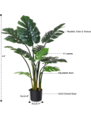
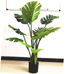
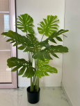
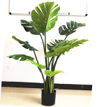
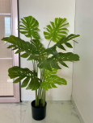

Fourwalls Artificial Real Touch Monstera Plant in Pot for Home and Office Decor (4 feet Tall)
This artificial Plant has very natural looking leaves and trunk the leaves feel real when you touch them and are aesthetically designed.
 41 ratings
41 ratings
$200
Deliver to Navin - Gurugram, 122003
In Stock
Ship from Amazon
Sold by ETrade Online
Packaging Ships in Product packaging
About this item
- Package Contents: 1 Fourwalls Artificial Real Touch Monstera Plant in a Pot
- Material: Natural looking PE Trunk with Premium Quailty Fabric Leaves
- This artificial Plant has very natural looking leaves and trunk the leaves feel real when you touch them and are aesthetically designed.
- The plant comprises of iconic glossy split leaves its strong stems spotlight tasteful details that live on forever the leaves and trunks have wires and can be shaped according to your preference. You can buy one of our belly baskets along with the plant which will add to its elegance.
- Our plants provide the perfect avenue to make your homes green and colorful without any maintenance. No need to water them or put them outdoors in the sun. They don’t shed their leaves and would only ever need to be dusted with a dry cloth. The products have a life of many, many years.